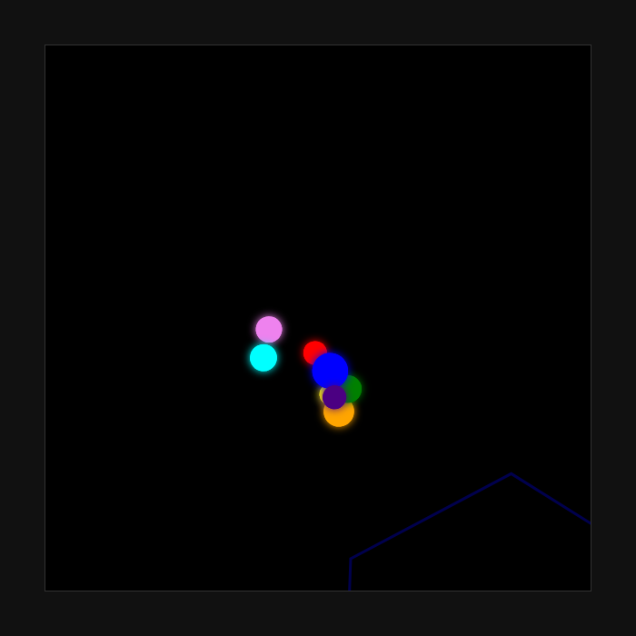

Qwen3-4B-Instruct-2507-4bit 맥 로컬 실행 실측 결과
맥 스튜디오 M5 Max 기반에서 가벼운 로컬 AI를 빠르게 돌리고 싶은 개발자에게 적합
2026년 10월 20일 맥 스튜디오 M5 Max(48GB)에서 mlx-lm 0.32.0으로 Qwen3-4B-Instruct-2507-4bit를 측정했습니다. 짧은 입력(512토큰) 기준 답 쓰는 속도는 초당 185.9토큰으로, 사람이 읽는 속도(초당 약 5토큰)보다 훨씬 빠릅니다. 최대 메모리 사용량은 3.7GB로 확인되었습니다.
이 맥에서 잰 숫자
| 모델 | Qwen3-4B-Instruct-2507-4bit |
|---|---|
| 원본 저장소 | mlx-community/Qwen3-4B-Instruct-2507-4bit |
| 가중치 용량(GB) | 2.3 |
| 라이선스 | apache-2.0 |
| 측정 기기 | 맥 스튜디오 M5 Max, 통합 메모리 48GB |
| 측정 도구 | mlx-lm 0.32.0 (MLX 0.32.3) |
| 측정일 | 2026-10-20 |
| 짧은 입력(512토큰) 답 쓰는 속도(토큰/초) | 185.9 |
| 짧은 입력 읽는 속도(토큰/초) | 5202 |
| 긴 입력(4096토큰) 답 쓰는 속도(토큰/초) | 156.6 |
| 긴 입력 읽는 속도(토큰/초) | 6144 |
| 최대 메모리 사용(GB) | 3.7 |
| 한국어 답변 점수(5점 만점) | 4 |
| 한국어 답변에 외국어 섞임 | 없음 |
| 한국어 객관식(KMMLU 50문항) 정답 | 16 / 50 |
| 도구 호출 정확도(10문항) | 10 / 10 |
| 파이썬 코딩(10문제, 테스트 전부 통과) | 9 / 10 |
| 형식 지시 따르기(10문항) | 8 / 10 |
| 긴 글 속 문장 찾기(약 16K토큰) | 찾음 (5.2초) |
| 긴 글 속 문장 찾기(약 32K토큰) | 찾음 (15초) |
| 한 번에 만든 튀는 공 애니메이션 | 움직임 |
답 쓰는 속도는 1초에 만들어 내는 토큰(글자 조각) 수입니다. 같은 모델도 기기·메모리·도구 버전에 따라 달라집니다.
한국어로 물어봤더니
질문: 맥에서 로컬 AI 모델을 처음 써 보려는 대학생에게, 장점 두 가지와 주의할 점 한 가지를 한국어로 짧게 알려 줘.
**장점:** 1. **속도가 빠르고 응답이 빠름** – 로컬로 실행하므로 인터넷 없이도 즉시 사용 가능. 2. **개인 정보가 안전** – 데이터를 외부에 보내지 않아 개인정보 유출 위험이 적다. **주의할 점:** - **소모되는 리소스** – 맥의 CPU/메모리가 부족하면 느려지거나 느려질 수 있음.
맥 환경에서 로컬 AI 실행 시 GPU(Metal) 활용이 핵심인데 CPU/메모리만 언급했고, 주의사항 문장에서 '느려지거나'가 중복되어 어색함.
한 번에 만든 튀는 공 애니메이션
"회전하는 육각형 안에서 공 8개가 튀는 HTML 을 한 파일로 만들어 줘"라는 요청에 처음 낸 답을 그대로 실행한 화면입니다.

이럴 때 맞아요
- 맥 스튜디오 M5 Max 환경에서 빠른 로컬 추론이 필요한 경우
- 최대 3.7GB 수준의 낮은 메모리 사용량을 요구하는 경우
- 도구 호출 정확도 10/10을 확인한 자동화 작업
이럴 때는 다른 모델을
- KMMLU 객관식 정답률 16/50으로 일반 지식 정확도가 낮아 보이는 경우
- 초당 185.9토큰보다 더 높은 처리량이 필요한 대량 배치 작업
자주 묻는 질문
Qwen3 4b instruct 2507 모델의 답 쓰는 속도는 얼마나 되나요?
짧은 입력(512토큰) 기준 초당 185.9토큰, 긴 입력(4096토큰) 기준 초당 156.6토큰으로 측정되었습니다.
맥 로컬 llm 실행 시 메모리 사용량은 어느 정도인가요?
가중치 용량 2.3GB 모델이 실행될 때 최대 메모리 사용량은 3.7GB로 확인되었습니다.
한국어 답변 품질은 어떤가요?
5점 만점에 4점을 받았으며, 외국어 섞임은 없었습니다. 다만 GPU(Metal) 활용 설명이 부족하고 문장 중복이 있는 점이 지적되었습니다.
코딩 및 도구 호출 능력은 어느 정도인가요?
파이썬 코딩 10문제 중 9문제, 도구 호출 10문항 중 10문항을 정확히 수행했습니다.
측정 방법
맥 스튜디오 M5 Max, 통합 메모리 48GB에서 mlx-lm 0.32.0 (MLX 0.32.3)로 측정했습니다. 입력 512토큰·4096토큰 뒤 128토큰을 생성하는 시험을 여러 번 반복한 평균이고, 한국어 답변은 온도 0으로 한 번 생성한 원문 그대로입니다(생각 과정은 떼고 답만). 추가 시험(있는 경우)은 모두 코드로 채점합니다: 한국어 객관식은 KMMLU(HAERAE-HUB, CC BY-ND 4.0) 10개 분야 50문항, 도구 호출·파이썬 코딩·형식 지시는 각 10문항(코딩은 인터넷이 막힌 환경에서 숨겨진 테스트 실행), 긴 글 찾기는 약 1만6천·3만2천 토큰 글 속에 넣은 문장을 찾는지, 튀는 공은 한 번에 만든 HTML 이 실제로 움직이는지입니다. 생각 기능은 끄고 온도 0으로 실행했습니다. 가중치는 Hugging Face의 mlx-community/Qwen3-4B-Instruct-2507-4bit를 썼습니다.
측정일 2026-10-20 · 커밋 한 모금